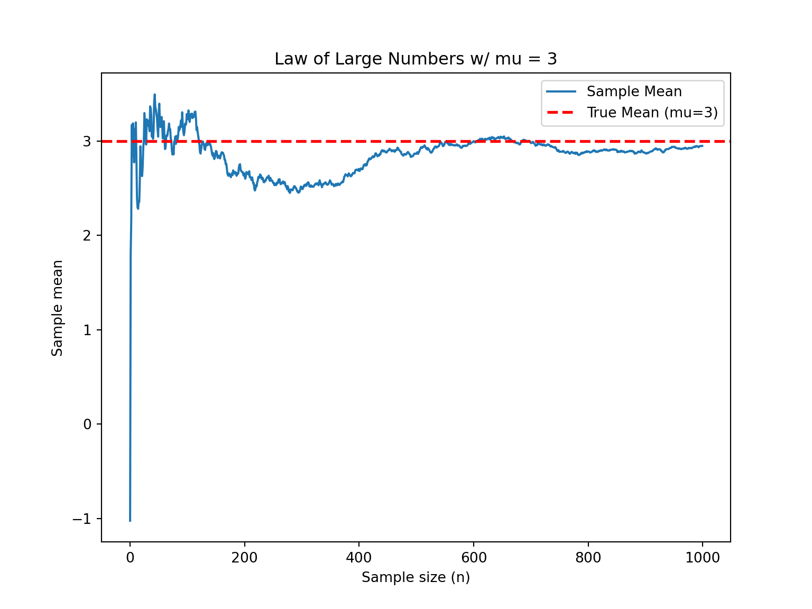

13 Law of Large Numbers and Central Limit Theorem
\[ \def\cD{{\cal D}} \def\cL{{\cal L}} \def\cX{{\cal X}} \def\cF{{\cal F}} \def\cH{{\cal H}} \def\bA{\mathbf{A}} \def\bB{\mathbf{B}} \def\bX{\mathbf{X}} \def\bH{\mathbf{H}} \def\bI{\mathbf{I}} \def\bU{\mathbf{U}} \def\bD{\mathbf{D}} \def\bV{\mathbf{V}} \def\bS{\mathbf{S}} \def\bW{\mathbf{W}} \def\bY{\mathbf{Y}} \def\bZ{\mathbf{Z}} \def\bK{\mathbf{K}} \def\bx{\mathbf{x}} \def\by{\mathbf{y}} \def\bs{\mathbf{s}} \def\br{\mathbf{r}} \def\bu{\mathbf{u}} \def\be{\mathbf{e}} \def\bv{\mathbf{v}} \def\bp{\mathbf{p}} \def\bw{\mathbf{w}} \def\bz{\mathbf{z}} \def\bzero{\mathbf{0}} \def\balpha{\boldsymbol \alpha} \def\bbeta{\boldsymbol \beta} \def\btheta{\boldsymbol \theta} \def\bSigma{\boldsymbol \Sigma} \def\bxi{\boldsymbol \xi} \def\bmu{\boldsymbol \mu} \def\bep{\boldsymbol \epsilon} \def\T{\text{T}} \def\Trace{\text{Trace}} \def\Cov{\text{Cov}} \def\cov{\text{Cov}} \def\Corr{\text{Corr}} \def\cor{\text{Corr}} \def\Var{\text{Var}} \def\var{\text{Var}} \def\E{\text{E}} \def\pr{\text{pr}} \def\Prob{\text{P}} \DeclareMathOperator*{\argmin}{arg\,min} \DeclareMathOperator*{\argmax}{arg\,max} \]
In sampling distribution Chapter 12, we learn that as the sample size \(n\) grows, the sampling distribution of sample mean
- has the mean identical to the expected value of the random variable being sampled, or the population mean
- is less variable with a smaller variance
- looks more like a normal distribution
You may be wondering if it is always true. The answer is yes if the sample mean is the average of independent and identically distributed random variables. These properties are proved by the two theorems: the Law of Large Numbers and the Central Limit Theorem.
13.1 Law of Large Numbers
The Law of Large Numbers (LLN) says that
If we keep on taking larger and larger random or iid samples (larger \(n\)), the statistic sample mean \(\overline{X}\) is guaranteed to get closer and closer to the population mean \(\mu = E(X)\) if the mean exists.
Therefore, with LLN, if \(E(X) = \mu\), \(\overline{X} \approx \mu\) when \(n\) is sufficiently large. It is always true, and it does not matter whether we know the value of \(\mu\) or not, as long as \(\mu\) exists or it is finite.
Figure 13.1 illustrates LLN using a simulation. We consider the sample size \(n = 1, 2, \dots, 1000\). For each \(n\), we draw a random sample \(x_1, \dots, x_n\) from a normal distribution \(N(3, 5^2)\), and the corresponding sample mean is \(\bar{x} = (x_1+ \cdots + x_n)/n\). When \(n\) is small, \(\bar{x}\) is quite from away from the population mean value \(\mu = 3\) due to the randomness of the samples. For example, in this simulation, \(x_1\), \(x_2\), and \(x_3\) are 7.91, 5.34, and 2.46 respectively, and hence the sample mean \(\bar{x}_3 =\) 5.24. Each \(x_i\) comes from \(N(3, 5^2)\). Although their expected value is 3, keep in mind that theoretically its realized value can be any real value. With larger variance, it is more likely to have a value away from its expected value. When the sample size is small, such randomness generally will not be washed out simply by averaging. Therefore, the sample mean is not that close to the population.
The marvelous part is that when the sample size is large, such randomness or the deviation from the mean can be washed out via averaging, and the sample mean will get closer to the population mean. In the figure, two simulations are run, and both show that when the sample size is over 200, the sample mean is quite close to the population mean, and it does not fluctuate much as when the sample size is small. This is probably one of the reasons why we love large sample size. Heard Big Data before? When we don’t know but want to sort of guess or learn the value of \(\mu\), we can draw a larger sample from the target population, calculate the sample mean, then use it as a proxy or representative of the population mean. The entire process of using sample statistics to learn unknown population properties or quantities is called statistical inference which will be discussed in detail starting next part.
Note
Remember that sine \(\overline{X}\) is a transformation of random variables \(X_1, \dots, X_n\), \(\overline{X}\) itself is also a random variable with some randomness and variation. Therefore, when the simulation (random sampling) is run twice (independently), for each size of \(n\), we will get two different sets of values of \(x_1, \dots, x_n\), and two different \(\bar{x}\)s, resulting in two lines in Figure 13.1.
Additionally, as shown in the figure, the black and green values of \(\overline{X}\) are quite different when \(n\) is small, showing a larger variation. Why? It comes from the fact that \(\Var(\overline{X}) = \sigma^2/n\). It also tells us why \(\overline{X}\) converges to \(\mu\). When \(n\) gets large, its variation gets small, and eventually this random variable behaves like a constant with no variation. That constant is \(\mu\).
Simulation of LLN (Normal distribution example)
Consider different sample size \(n\).
-
For each size of \(n\), do:
- [1] Draw values \(x_1, x_2, \dots, x_{n}\) from \(N(\mu, \sigma^2)\) for some values of \(\mu\) and \(\sigma^2\).
- [2] Compute \(\overline{x}_n = \frac{1}{n}\sum_{i=1}^n x_i\).
Plot \(\overline{x}_n\) (y-axis) vs. \(n\) (x-axis).
mu <- 3
sd <- 5
nn <- 1000
## Algorithm
# [1] Generate normal distribution samples
set.seed(1000)
x <- rnorm(nn, mean = mu, sd = sd)
# [2] Calculate cumulative mean
x_bar <- cumsum(x) / seq_len(nn)
## Plotting
plot(x_bar, type = "l",
main = "Law of Large Numbers w/ mu = 3",
xlab = "sample size (n)",
ylab = "sample mean", las = 1)
abline(h = 3, col = "red", lwd = 2, lty = 2)
import numpy as np
import matplotlib.pyplot as plt
# Parameters
mu = 3
sd = 5
nn = 1000
## Algorithm
# [1] Generate normal distribution samples
np.random.seed(1000)
x = np.random.normal(mu, sd, nn)
# [2] Calculate cumulative mean
x_bar = np.cumsum(x) / np.arange(1, nn + 1)
# Plotting
plt.figure(figsize=(8, 6))
plt.plot(x_bar, label="Sample Mean")
plt.axhline(y=mu, color='red', linestyle='--', linewidth=2, label="True Mean (mu=3)")
plt.title("Law of Large Numbers w/ mu = 3")
plt.xlabel("Sample size (n)")
plt.ylabel("Sample mean")
plt.legend()
plt.show()13.2 Central Limit Theorem
It’s time to talk about the most important theorem in probability and statistics, at least in my opinion, the central limit theorem (CLT).
In sampling distribution Chapter 12, we learned that if \(X_i \stackrel{iid}{\sim} N(\mu, \sigma^2)\), then \(\overline{X} \sim N\left(\mu, \frac{\sigma^2}{n} \right)\). But the question is what if the population distribution is NOT normal? What does the sampling distribution of the sample mean look like if the population distribution is multimodal? or skewed? or not bell-shaped? Well, the central limit theorem gives us the answer!
Central Limit Theorem (CLT):
Suppose \(\overline{X}\) is the sample mean from a random sample of size \(n\) and from a population distribution having mean \(\mu\) and standard deviation \(\sigma < \infty\). As \(n\) increases, the sampling distribution of \(\overline{X}\) looks more and more like \(N(\mu, \sigma^2/n)\) regardless of the distribution from which we are sampling!

Figure 13.3 illustrates the CLT. First, the random sample \((X_1, \dots, X_n)\) can be collected from any population distribution, whether it is normal or not. The magic part is that the sampling distribution of the sample mean \(\overline{X}\) always looks like normal distribution \(N(\mu, \sigma^2/n)\) as long as the sample size \(n\) is sufficiently large. The larger \(n\) is, the more normal-like the sampling distribution of \(\overline{X}\) is. One question is how large is enough for \(n\). Amazingly the normal approximation is quite well when \(n \ge 30\). The variance of the sampling distribution which is \(\sigma^2/n\) is decreasing with \(n\) as well.
Please try the app and see how the shape of the sampling distribution changes with the sample size \(n\) and with the shape of the population distribution. You will find that it requires larger \(n\) to get a more normal-like sampling distribution if the population distribution is very skewed. You can also see how the CLT works in Figure 13.4 and Figure 13.5. The population distribution can be discrete, like binomial or Poisson distribution. Their sampling distribution of \(\overline{X}\) will still look like normal although the sampling distribution is not continuous.


In sum, for a random sample \((X_1, \dots, X_n)\), if the population distribution is normally distributed, then of course with no surprise the sampling distribution of the sample mean is also exactly normally distributed. If the population distribution is not normally distributed, as long as its mean and variance exist, its sampling distribution of the sample mean will still look like a normal distribution when the sample size \(n\) is large enough.
\(X_i \stackrel{iid}{\sim} N(\mu, \sigma^2)\). \(\overline{X} \sim N\left(\mu, \frac{\sigma^2}{n} \right)\)
\(X_i \stackrel{iid}{\sim}\) any distribution (\(\mu, \sigma^2\)). \(\overline{X}\) looks like \(N\left(\mu, \frac{\sigma^2}{n} \right)\) (for \(n\) sufficiently large)
Why is the central limit theorem Important? Many well-developed statistical methods are based on the normal distribution assumption. With the central limit theorem, we can use these methods even if we are sampling from a non-normal distribution or if we have no idea what the population distribution is, provided that the sample size is large enough.
To show the distribution of \(\overline{X}\) looks like Gaussian when \(n\) is large, we need lots of values of \(\overline{X}\) and draw a histogram.
Simulation of CLT (Poisson distribution example)
Consider different sample size \(n\). Set the sample size of \(\overline{X}\) be \(M\).
-
For each size of \(n\), do:
- [1] For each \(m = 1, 2, \dots, M\), draw sample \((x_1^m, x_2^m, \dots, x_n^m)\) from some distribution with mean \(\mu\) and standard deviation \(\sigma\).
- [2] For each \(m = 1, 2, \dots, M\), compute \(\overline{x}^m_n = \frac{1}{n}\sum_{i=1}^n x_i^m\).
- [3] Draw a histogram of the sample \((\overline{x}^1_n, \overline{x}^2_n, \dots, \overline{x}^M_n)\)
The np.random.poisson function is used to generate Poisson-distributed random samples. The shape (k, M) ensures that you generate k samples for each of the M simulations.
The np.mean(x_sam, axis=0) computes the mean of the k samples for each of the M simulations.
f"Sample size = {k}" uses a feature in Python called f-strings (formatted string literals). The f before the opening quote marks indicates that this is a formatted string. It tells Python that the string may contain placeholders (expressions) inside curly braces {} that should be evaluated. Anything inside the curly braces {} is treated as an expression, and its value will be evaluated and inserted into the string. In this case, k is a variable, so its value will be converted to a string and placed inside the output.
import numpy as np
import matplotlib.pyplot as plt
n_vec = [2, 8, 100] # Vector of sample sizes
M = 10000 # Number of simulations
lambda_par = 1 # Poisson parameter
for k in n_vec:
# [1] Generate Poisson samples of size k, repeated M times
x_sam = np.random.poisson(lambda_par, (k, M))
# [2] Compute the sample means for each column m = 1, ..., M
x_bar_sam = np.mean(x_sam, axis=0)
# [3] Plot histogram of sample means
plt.hist(x_bar_sam)
plt.title(f"Size = {k}")
plt.show()13.3 Central Limit Theorem Example
Suppose that the selling prices of houses in Milwaukee are known to have a mean of $382,000 and a standard deviation of $150,000.
In 100 randomly selected sales, what is the probability the average selling price is more than $400,000?

Since the sample size is fairly large \((n = 100)\), by the central limit theorem, the sampling distribution of the average selling price is approximately normal with a mean of $382,000 and a standard deviation of \(150,000 / \sqrt{100}\).
Then \(P(\overline{X} > 400000) = P\left(\frac{\overline{X} - 382000}{150000/\sqrt{100}} > \frac{400000 - 382000}{150000/\sqrt{100}}\right) \approx P(Z > 1.2)\) where \(Z \sim N(0, 1)\).
Therefore using R/Python we get the probability